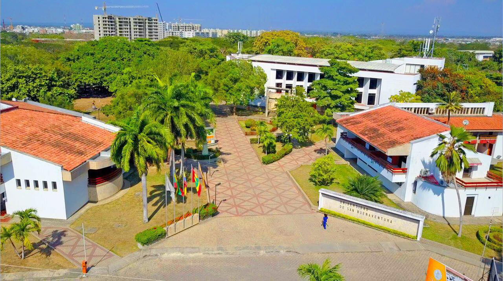
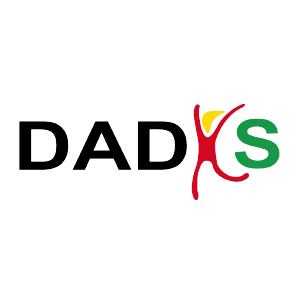
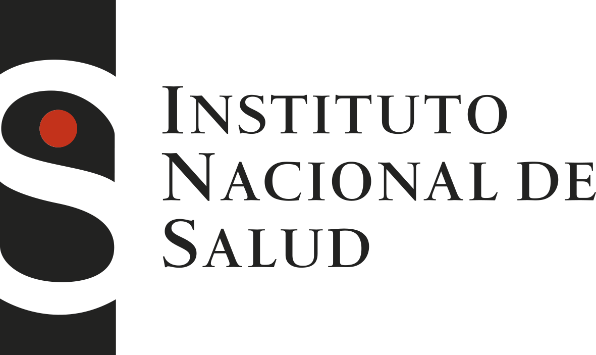

Laboratorio Clínico
Microbiología clínica, susceptibilidad antimicrobiana y falla de barreras en sepsis. Del resultado del laboratorio a la decisión terapéutica en el paciente crítico.
1er Summit Internacional · Cartagena de Indias
Integrando el laboratorio clínico, la medicina de precisión y la salud pública.
El 1er Summit Internacional en Enfermedades Infecciosas & Medicina Crítica reúne durante dos jornadas a investigadores, clínicos y autoridades sanitarias para conectar tres mundos que suelen trabajar por separado: el resultado del laboratorio clínico, la decisión terapéutica al lado de la cama y la vigilancia epidemiológica del territorio.
Doce conferencias con ponentes nacionales e internacionales abordan el Código Sepsis, la resistencia antimicrobiana en Cartagena, los biomarcadores de precisión en la UCI, las arbovirosis emergentes y el enfoque One Health, con muestra comercial permanente durante las pausas.

Microbiología clínica, susceptibilidad antimicrobiana y falla de barreras en sepsis. Del resultado del laboratorio a la decisión terapéutica en el paciente crítico.
Biomarcadores en la UCI, inmunopatogénesis, desescalamiento antimicrobiano seguro y la convergencia entre semiología, POCUS e inteligencia artificial.
Código Sepsis como política pública, vigilancia de la resistencia antimicrobiana en Cartagena, arbovirosis emergentes y enfoque One Health.
Jornada Mañana · 8:00 a.m. – 12:00 m.
Intervención del Decano de la Facultad de Ciencias de la Salud y del Secretario de Salud Distrital.
Juan Pablo Betancur Otálvaro Médico pediatra. Especialista en enfermedades infecciosas. Referente departamental PROA. Asistente técnico, Instituto Nacional de Salud (INS).
Reyna María Ayola Cerro Odontóloga. Especialista en gerencia en salud. MSc en Epidemiología. Referente de IAAS del Programa de Vigilancia en Salud Pública, DADIS.
Germán Esparza Bacteriólogo, microbiólogo clínico. Miembro del subcomité de susceptibilidad antimicrobiana del Clinical and Laboratory Standards Institute (CLSI), Estados Unidos. QUALITY / PROASECAL.
Andrés Solano Médico intensivista. Fundación Santa Fe de Bogotá. Clínica Serena del Mar, Cartagena.
Jornada Tarde · 2:00 p.m. – 5:00 p.m.
Eder Cano Pérez Biólogo. Magíster en Genética. Estudiante doctoral en Medicina Tropical, Universidad de Cartagena.
Andrés Sánchez Caraballo Biólogo. MSc en Inmunología. Doctorando en Ciencias Farmacéuticas. Docente del Programa de Medicina, UNINÚÑEZ.
Bárbara Julia Arroyo Salgado Bacterióloga. Magíster en microbiología clínica. PhD en Ciencias Biomédicas. Universidad de Cartagena.
Jornada Única · 8:00 a.m. – 12:20 m.
Marlón Múnera Gómez Biólogo. Magíster en inmunología. PhD en Ciencias Biomédicas. Docente del Programa de Medicina, UNINÚÑEZ.
Henry Puerta Guardo Bacteriólogo. MSc en Microbiología y biología celular. PhD en Infectómica y patogénesis molecular. Fellow posdoctoral en patogénesis viral. Universidad Autónoma de Yucatán, México.
Juan Camilo García Domínguez Cardiólogo – Ecocardiografista. Radiólogos Asociados – Clínica Iberoamérica. BIOGUARD.
Jorge Iván Marín Uribe MSc en Microbiología Clínica. MSc en Ciencias Médicas, mención infecciones intrahospitalarias y epidemiología hospitalaria. Doctorando en Enfermedades Infecciosas. Clínica Santillana, Manizales.
Armando Cabrera González Especialista en Medicina Interna. Docente de cátedra de la Facultad de Medicina, Universidad de Cartagena. Fundador y director del Curso OPES PRE-RESIDENTES.
Unidad de Bienestar, Universidad de San Buenaventura.
Universidad de San Buenaventura Cartagena. Sede de las dos jornadas académicas del Summit, los actos protocolarios y la clausura cultural.
Espacio permanente para la muestra comercial, activo durante las tres pausas de café programadas a lo largo del evento.
La capacidad del auditorio limita el evento a 130 personas. El pre-registro permite reservar tu lugar antes de que se agoten los cupos.
El Auditorio Torreón tiene capacidad para 130 personas. El pre-registro nos permite dimensionar la asistencia y reservar tu lugar en las jornadas del 30 y 31 de octubre de 2026.
El formulario es gratuito y no genera ningún compromiso de pago. Los detalles definitivos de confirmación y logística llegarán a tu correo electrónico.
Ir al formulario de pre-registroSe abre en una pestaña nueva · Formulario alojado en Microsoft Forms
La muestra comercial se instala en el Salón de eventos y exposiciones CICAG y permanece activa durante las pausas de café de ambas jornadas.
Corporación Universitaria Rafael Núñez

DADIS Cartagena

Instituto Nacional de Salud
Proasecal
Universidad Autónoma de Tucumán

Universidad de Cartagena
Para información sobre la muestra comercial, inscripciones institucionales o cualquier aspecto logístico del Summit, escríbenos al correo del comité organizador.
[Correo de contacto del Summit]
Universidad de San Buenaventura Cartagena · Cartagena de Indias, Colombia